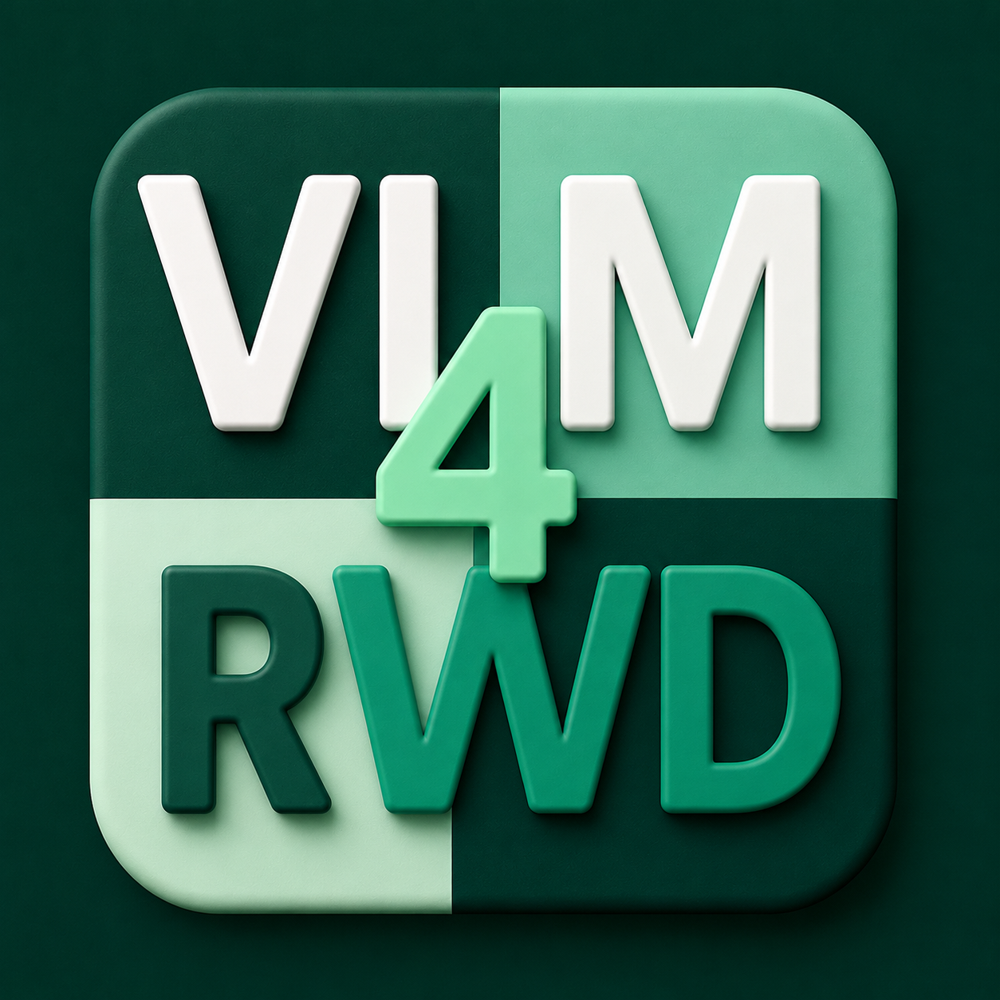

NeurIPS 2026 Workshop
2nd Workshop on VLM4RWD | NeurIPS 2026 | Dec, 2026 | Sydney, Australia
Vision-language(-action) models are rapidly evolving from systems that describe the world to agents that must perceive, reason, and act within it. This workshop focuses on the principles, methods, and evaluation needed to build grounded, faithful, and reliable multimodal intelligence for real-world deployment.
AI systems must reliably connect language, perception, and actions with relevant entities and observations in the environment, ensuring that predictions, reasoning, and decisions remain supported by underlying visual and physical evidence.
Real-world agents must integrate perception, reasoning, planning, and action in a manner that remains robust under dynamic and uncertain conditions, with decisions grounded in the causal structure of the environment.
Systems deployed in robotics and autonomous environments require principled evaluation, calibrated uncertainty, predictable failure modes, and rigorous assessment across distribution shifts and counterfactual scenarios.
We invite high-quality submissions that advance grounded and faithful vision-language and vision-language-action models for real-world deployment.
We welcome research addressing key challenges in visual grounding, faithful reasoning, hallucination mitigation, robustness, embodied intelligence, robotics, autonomous systems, and world models.
Accepted papers will be presented during the workshop poster sessions, and selected submissions will be invited for contributed spotlight talks.
Aug 31th, 2026
Sep 30th, 2026
Oct , 2026
Dec , 2026
To be announced! Full-day workshop at NeurIPS 2026, Dec, Sydney, Australia.
TBA: Speakers will be added soon.
Questions or feedback? Feel free to reach out. We would love to hear from you.
NeurIPS 2026
Sydney, Australia
Exact venue details will be announced closer to the event
The workshop will be held in-person at NeurIPS 2026 in Sydney, Australia.
No, the workshop proceedings will be non-archival. Authors of accepted papers retain the full copyright of their work and are free to submit extended versions to conferences or journals.